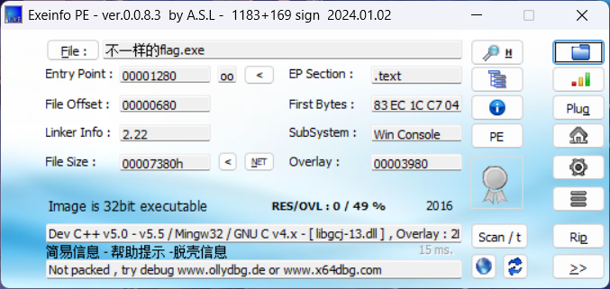

摘要：本文以一道 32 位 CTF 逆向迷宫题为例，介绍如何从 PE 文件信息、IDA 反编译代码和栈变量偏移中恢复程序逻辑。文章重点分析指针强制类型转换、局部变量的内存布局、二维数组的一维化表示、无符号比较和 ASCII 字符判断，并最终推导出正确的输入序列。
一、题目概览
这道题表面上是一个交互式迷宫：程序不断提示用户输入 1、2、3、4，分别代表上、下、左、右。走到墙会失败，走到终点会成功。真正的难点并不是走迷宫，而是从反编译代码中看出地图藏在哪里，以及程序到底如何计算当前位置。
分析这类题时，可以把任务拆成四个问题：
• 程序是否加壳，是否需要先脱壳？
• 地图数据保存在哪里，是什么格式？
• 用户输入如何改变行、列坐标？
• 程序如何根据坐标取出当前地图字符？
提示：阅读反编译代码时，不要过分依赖变量名。IDA 生成的 v3、v4、v7 等名称只是为了让代码能够显示出来，真正有意义的是变量的类型、地址偏移、读写方式和参与运算的关系。
二、使用 Exeinfo PE 初步检查程序
首先使用 Exeinfo PE 查看可执行文件。
截图中可以看到：

“Not packed”只能说明当前工具没有识别出常见的加壳特征，并不能从理论上证明程序绝对没有任何保护。遇到疑似加壳程序时，还可以观察入口点是否位于解压存根、是否存在 UPX/ASPack/VMProtect 等标识，以及磁盘文件大小和内存展开大小是否明显不同。
2.1 需要了解的 PE 基础
PE 是 Windows 可执行文件格式。一个 PE 文件通常包含多个节区（section），例如：
Entry Point（入口点）是程序开始执行的位置。它不一定等于 C 语言中的 main：编译器通常会先执行运行库初始化代码，之后才调用 main。加壳程序的入口点经常先落在壳的解压或解密代码中，普通程序则更容易沿着入口点进入运行库和用户代码。
三、在 IDA 中定位 main 函数
将程序载入 IDA 后，先查看字符串窗口或函数列表。题目中的菜单字符串“you can choose one action to execute”“1 up”等非常醒目，可以通过字符串交叉引用定位到使用它们的函数，再进入 main 或主逻辑函数。按 F5 可以生成 Hex-Rays 伪 C 代码。
下面保留核心逻辑，并把部分菜单输出省略，以便集中观察坐标和地图访问：
int __cdecl main(int argc, const char **argv, const char **envp)
{
char v3[29];
int v4;
int v5;
int i;
_BYTE v7[12];
__main();
v3[26] = 0;
*(_WORD *)&v3[27] = 0;
v4 = 0;
strcpy(v3, "*11110100001010000101111#");
while ( 1 )
{
puts("you can choose one action to execute");
puts("1 up");
puts("2 down");
puts("3 left");
printf("4 right\n:");
scanf("%d", &v5);
if ( v5 == 2 )
++*(_DWORD *)&v3[25];
else if ( v5 > 2 )
{
if ( v5 == 3 )
--v4;
else
{
if ( v5 != 4 )
exit(1);
++v4;
}
}
else
{
if ( v5 != 1 )
exit(1);
--*(_DWORD *)&v3[25];
}
for ( i = 0; i <= 1; ++i )
if ( *(_DWORD *)&v3[4 * i + 25] > 4u )
exit(1);
if ( v7[5 * *(_DWORD *)&v3[25] - 41 + v4] == '1' )
exit(1);
if ( v7[5 * *(_DWORD *)&v3[25] - 41 + v4] == '#' )
{
puts("\nok, the order you enter is the flag!");
exit(0);
}
}
}3.1 先不要急着相信伪代码
反编译器的目标是生成“看起来像 C 的代码”，而不是恢复原作者写下的源码。它可能会把同一块内存解释成不同变量，也可能因为栈变量相邻而显示出看似奇怪的数组下标。因此，看到 v7 的负下标时，不应该马上认定程序真的在访问一个合法的负下标数组，而应回到地址层面重新计算。
四、恢复地图字符串
程序执行 strcpy(v3, "*11110100001010000101111#")，将地图字符串复制到 v3。这个字符串包含 25 个可见字符：
"*11110100001010000101111#"25 个字符可以按每行 5 个字符排列，因此地图是一个 5×5 的逻辑网格：
为了便于观察，可以把原始字符转换成常见的迷宫符号：
S####
.#...
.#.#.
...#.
####E这里 S 表示起点，E 表示终点，. 表示道路，# 表示墙。它只是可视化写法；程序实际比较的仍然是原字符串中的 *、0、1 和 #。
4.1 为什么字符串长度是 25？
地图有 5 行、每行 5 列，所以元素数量为 5×5=25。C 字符串还需要一个结尾的 '\0'，因此 strcpy 实际会复制 26 个字节：25 个地图字符加上结尾空字节。
字符串中的第 25 个下标（v3[25]）正好接收 '\0'。随后程序把 v3[25] 开始的 4 个字节当作行坐标使用，因此初始行坐标自然为 0。v3[26]、v3[27]、v3[28] 也被初始化为 0，为这个局部内存区域提供了干净的初始状态。
提示：这里体现了逆向分析中的一个重要原则：字符串、数组和整数只是解释内存的不同方式。机器内存本身没有“这是字符串”或“这是坐标”的标签，具体含义取决于程序怎样读写它。
五、栈帧、EBP 偏移与变量布局
IDA 给出的局部变量偏移如下：
char v3[29]; // [esp+17h] [ebp-35h]
int v4; // [esp+34h] [ebp-18h]
int v5; // [esp+38h] [ebp-14h]
int i; // [esp+3Ch] [ebp-10h]
_BYTE v7[12]; // [esp+40h] [ebp-0Ch]
在使用 EBP 作为栈帧基址的 32 位函数中，局部变量通常通过 [ebp-偏移] 访问。ebp 是当前函数栈帧的参考位置，减去不同偏移就能定位不同局部数据。
本题中，v3 位于 [ebp-0x35]，v4 位于 [ebp-0x18]。v3 占 29 个字节，即 0x1d 字节，因此 v3 起始位置加上 0x1d 后正好到达 [ebp-0x18]：
0x35 - 0x1d = 0x18
这说明在本次编译结果中，v4 紧邻 v3 的末尾。可以把相关区域理解为：
低地址
[ebp-0x35] v3[0] ... v3[24] 地图字符
[ebp-0x20] v3[25] ... v3[28] 4 字节区域，被当作 row
[ebp-0x18] v4 4 字节区域，被当作 col
[ebp-0x14] v5 用户输入
[ebp-0x10] i 循环变量
[ebp-0x0c] v7 IDA 识别出的局部数组
高地址
需要强调：栈整体通常被描述为“向低地址方向增长”，但局部变量的具体排列、对齐和空隙由编译器、目标架构、优化选项和函数代码共同决定。不能因为本题中变量相邻，就认为所有程序都必然这样排列。
5.1 栈向下增长是什么意思？
在 x86 32 位环境中，执行 push、call 或为局部变量分配空间时，ESP 往往减小，所以新分配的栈空间位于更低地址。这就是“栈向下增长”。它描述的是栈空间扩展的方向，不等于每个变量内部的字符顺序，也不等于编译器一定按照源代码声明顺序排列变量。
六、类型转换：_DWORD、_WORD 和 char 数组
反编译代码中常见如下写法：
*(_DWORD *)&v3[25]
*(_WORD *)&v3[27]
可以分三步阅读：
• &v3[25]：取得 v3[25] 的地址。
• (_DWORD *)&v3[25]：把这个地址强制解释为指向 4 字节整数的指针。
• *(_DWORD *)&v3[25]：解引用该指针，读写从 v3[25] 开始的 4 个字节。
同理，_WORD 表示 2 字节数据。因此 *(_WORD *)&v3[27] = 0 会一次写入 v3[27] 和 v3[28]。
这不是在创建一个新的数组，而是在用不同的数据类型解释同一片内存。C 语言层面，这种跨对象访问可能涉及未定义行为；但在逆向分析中，我们关注的是编译器生成的机器码以及该二进制在目标环境中的实际行为。
6.1 小端序补充
x86 通常使用小端序。假设从地址 A 开始写入整数 1，那么内存中的 4 个字节通常是 01 00 00 00。因为本题坐标只取 0 到 4，所以将一段连续的 4 字节解释为 int 时，数值仍然容易理解。
七、输入与坐标变化
v3[25] 开始的 4 字节被当作行坐标 row，v4 被当作列坐标 col。初始化后：
row = 0
col = 0
输入不是 1、2、3、4 时，程序调用 exit(1) 结束。注意，程序是在处理一次移动之后，才进行边界和地图字符检查，所以每一步都必须先确认新坐标合法。
7.1 为什么 row 是 v3[25]？
表达式 *(_DWORD *)&v3[25] 明确告诉我们：程序从 v3 的第 25 个字节开始读写 4 字节整数。由于 v3[25] 原本是 strcpy 写入的字符串结尾 '\0'，它可以自然作为初始值 0。
而 v4 是独立声明的 int，并且初始化为 0，所以它承担另一个坐标的作用。根据后面的 ++v4、--v4 以及地图索引表达式，可以确定 v4 是列坐标。
八、边界检查与无符号比较
for (i = 0; i <= 1; ++i)
{
if (*(_DWORD *)&v3[4 * i + 25] > 4u)
exit(1);
}
当 i=0 时，地址偏移为 25，检查 row；当 i=1 时，偏移为 29，检查紧接在 v3 后面的 v4，也就是 col。
代码比较的是 4u，而不是普通的有符号整数 4。u 表示 unsigned。当 row 或 col 减到 -1 时，参与比较前会转换成一个很大的无符号数，例如 32 位环境下的 -1 会变成 0xffffffff，因此它也会满足“大于 4”，从而退出。
所以从程序效果看，这段检查等价于：
0 <= row && row <= 4
0 <= col && col <= 4
提示：反编译代码未必会把隐含的类型转换直接写出来。看到带 u 的常数、无符号寄存器或无符号比较时，要特别注意负数在比较前可能发生的转换。
九、关键地址换算：v7 其实指向了 v3 的地图区域
程序检查当前格子时使用：
v7[5 * row - 41 + col]
如果只看 v7[...], 会觉得下标可能是负数，而且 v7 只有 12 个字节，似乎无法容纳 5×5 地图。此时必须比较变量起始地址。
v3 起始地址：ebp - 0x35
v7 起始地址：ebp - 0x0C
地址差：0x35 - 0x0C = 0x29 = 41
v7 的起始地址比 v3 高 41 个字节。因此，从 v7 起始地址访问下标 x 时，实际地址相当于 v3 起始地址加上 x+41 个字节：
v7[x] = v3[x + 41]
将 x = 5 * row - 41 + col 代入：
v7[5 * row - 41 + col]
= v3[(5 * row - 41 + col) + 41]
= v3[5 * row + col]
代入后可得：v7[5 * row - 41 + col] = v3[5 * row + col]。本题的访问最终落在地图字符串区域，等价的逻辑索引是 v3[5 * row + col]。也就是说，IDA 的 v7 变量名只是反编译器基于局部变量识别结果给出的显示方式，不能把它当作真实的独立地图数组。
从二维数组角度看，正确的逻辑是：
index = row * width + col
index = row * 5 + col
例如 row=3、col=2 时，索引为 3×5+2=17，对应字符串中的第 17 个地图字符。
提示：更严谨地说，这里是根据局部变量的实际地址和生成的机器码恢复访问关系，而不是仅凭 C 语言数组语义推断。反编译结果在跨变量访问、数组边界和类型恢复方面可能并不准确。
十、ASCII 字符判断
程序没有直接写出“墙”“道路”“终点”这些文字，而是比较字符的 ASCII 值。常用值如下：
在 C 代码中，字符字面量“1”本质上就是一个整数常量 49，因此 `== 49` 和 `== '1'` 在这里表达的是同一个判断。逆向时看到 48、49、35 这类数字，可以尝试转换成 ASCII 字符，往往能快速发现字符串、协议或状态机中的含义。
十一、从地图推导正确路线
起点是 (0,0)，终点是 (4,4)。根据地图逐步移动：
(0,0) -> (1,0) -> (2,0) -> (3,0)
-> (3,1) -> (3,2) -> (2,2)
-> (1,2) -> (1,3) -> (1,4)
-> (2,4) -> (3,4) -> (4,4)
将输入列连接起来，得到：
222441144222
因此，在程序中依次输入 2、2、2、4、4、1、1、4、4、2、2、2，即可到达终点。程序输出“the order you enter is the flag”，所以题目要求的核心答案就是这组输入顺序。
十二、如何用脚本验证路线
手工推导适合讲解，但在实际 CTF 中，使用脚本可以减少抄写和坐标判断错误。下面的 Python 示例使用 BFS（广度优先搜索）在地图上寻找一条可行路径。
from collections import deque
raw = "*11110100001010000101111#"
maze = [raw[i:i + 5] for i in range(0, 25, 5)]
start = (0, 0)
end = (4, 4)
# 1=上，2=下，3=左，4=右
moves = [(-1, 0, "1"), (1, 0, "2"),
(0, -1, "3"), (0, 1, "4")]
queue = deque([(start, "")])
visited = {start}
while queue:
(row, col), path = queue.popleft()
if (row, col) == end:
print(path)
break
for dr, dc, key in moves:
nr, nc = row + dr, col + dc
if not (0 <= nr < 5 and 0 <= nc < 5):
continue
if maze[nr][nc] == "1":
continue
if (nr, nc) in visited:
continue
visited.add((nr, nc))
queue.append(((nr, nc), path + key))脚本输出 `222441144222`。脚本验证的价值在于：它可以同时检查边界、墙和终点，适合地图较大或路线较多的题目。对于本题，手算和脚本结果一致。
十三、从这道题可以掌握的通用知识
1. 先看数据，再看控制流：很多逆向题的关键答案藏在字符串、数组或常量中。先定位数据，再理解程序如何访问它，通常比一开始逐条阅读所有指令更高效。
2. 变量名不等于变量含义：v3 可能既保存字符串，也被借用来保存整数；v7 可能只是反编译器选择的访问基址。应根据地址、类型和读写位置判断。
3. 数组本质上是连续内存：二维数组通常可以用 row*width+col 计算一维偏移。看到乘法、加法和指针访问时，要联想到数组索引。
4. 注意隐式类型转换：有符号数与无符号数比较时，负数可能变成很大的正数。很多边界检查和漏洞都与此有关。
5. 区分静态分析与运行时行为：C 语言源码层面可能认为某些跨数组访问不安全，但逆向分析应结合目标编译器生成的机器码，确认程序在实际环境中如何运行。
6. 用动态调试验证猜想：可以在关键比较指令处下断点，观察 row、col、实际读取地址和读取到的字节。静态推导与动态观察相互印证，结论更可靠。
十四、总结
本题的完整分析链条如下：
• 通过 Exeinfo PE 判断程序是 32 位控制台程序，未发现明显加壳特征。
• 在 IDA 中通过菜单字符串定位 main，并观察反编译出的输入、坐标和字符判断逻辑。
• 从字符串 *11110100001010000101111# 恢复 5×5 地图。
• 根据 [ebp-偏移] 和指针强制类型转换，识别出 v3 末尾区域和 v4 被用作 row、col。
• 通过无符号比较理解坐标范围为 0 到 4。
• 根据地址关系和一维数组公式恢复实际地图访问。
• 将 1、2、3、4 映射为上下左右，逐步推导出 222441144222。
这道题的核心并不是复杂算法，而是正确理解内存。面对反编译代码时，建议依次检查：数据在哪里、变量地址是多少、指针实际指向哪里、索引如何计算、比较使用什么类型。只要把这些问题拆开，许多看似混乱的伪代码都可以还原成清晰的逻辑。